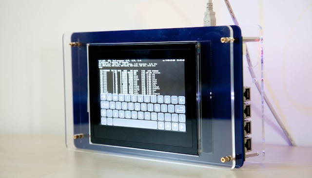

CHERI
Capability Hardware Enhanced RISC Instructions (CHERI)
PIs: Robert N. M. Watson (University of Cambridge), Simon W. Moore (University of Cambridge), Peter Sewell (University of Cambridge), and Peter Neumann (SRI International)

January 2022: Arm has shipped its CHERI-enabled Morello prototype processor, SoC, and board! Read blog posts about this at Arm and Microsoft, and our own thoughts at Cambridge. |
|
October 2020: We have posted CHERI ISAv8. This ISA version is synchronized to Arm's Morello architecture, as well as presenting a mature version of our CHERI-RISC-V ISA. |
|
September 2019: Learn about the CHERI architecture! Our technical report An Introduction to CHERI is a high-level summary of our work on CHERI architecture, microarchitecture, formal modeling, and software. |
CHERI (Capability Hardware Enhanced RISC Instructions) is a joint research project of SRI International and the University of Cambridge to revisit fundamental design choices in hardware and software to dramatically improve system security. CHERI has been supported by the DARPA CRASH, MRC, and SSITH programs since 2010, as well as other DARPA research and transition funding. Since 2019, development of Arm's experimental CHERI-enabled Morello processor, SoC, and board has been supported by UKRI. We gratefully acknowledge DARPA, UKRI, and our other supporters including EPSRC, ERC, Google, and Arm.
CHERI extends conventional hardware Instruction-Set Architectures (ISAs) with new architectural features to enable fine-grained memory protection and highly scalable software compartmentalization. The CHERI memory-protection features allow historically memory-unsafe programming languages such as C and C++ to be adapted to provide strong, compatible, and efficient protection against many currently widely exploited vulnerabilities. The CHERI scalable compartmentalization features enable the fine-grained decomposition of operating-system (OS) and application code, to limit the effects of security vulnerabilities in ways that are not supported by current architectures.
CHERI is a hybrid capability architecture in that it is able to blend architectural capabilities with conventional MMU-based architectures and microarchitectures, and with conventional software stacks based on virtual memory and C/C++. This approach allows incremental deployment within existing software ecosystems, which we have demonstrated through extensive hardware and software prototyping.
CHERI interacts with the design of the full hardware-software stack. We have developed:
- An abstract CHERI protection model that introduces architectural capabilities, hardware-supported descriptions of permissions that can be used, in place of integer virtual addresses, to refer to data, code, and objects in protected ways;
- A set of ISA extensions to 64-bit MIPS, 32-bit RISC-V, 64-bit RISC-V, and (in collaboration with Arm) 64-bit Armv8-A, showing that the model is applicable to a range of contemporary ISA designs.
- New microarchitecture demonstrating that capabilities can be implemented efficiently in hardware, including capability compression and tagged memory to protect capabilities in memory; and
- Formal models of these ISA extensions enabling mechanised statements and proofs of their security properties, automatic test generation, and automatic construction of executable ISA-level simulators.
These features enable new software constructs that are incrementally deployable within existing software ecosystems. Through extensive prototyping and co-design, we have demonstrated and evaluated:
- New software construction models that use capabilities to provide fine-grained memory protection and scalable software compartmentalization;
- Language and compiler extensions to use capabilities in implementing memory-safe C and C++, higher-level managed languages, and Foreign Function Interfaces (FFIs);
- OS extensions to use fine-grained memory protection, and to support applications that use CHERI, including through spatial, referential, and temporal memory safety;
- OS extensions that provide new CHERI-based abstractions including in-kernel and intra-process compartmentalization, and new efficient Inter-Process Communication (IPC);
- Application-level adaptations to operate correctly with CHERI memory protection; and
- Application-level adaptations to introduce new and more affordable software compartmentalization.
CHERI is a hardware/software/semantics co-design project, combining hardware implementation, adaption of mainstream software stacks, and formal semantics and proof. The CHERI ideas have been developed first as a modification to 64-bit MIPS and now also for 32/64-bit RISC-V and 64-bit ARMv8-A. We have prototyped a complete software stack for CHERI by adapting widely used open-source software such as Clang/LLVM, FreeBSD, FreeRTOS, and applications such as WebKit, OpenSSH, and PostgreSQL. We have formally modeled the architecture and constructed a number of proofs about its security, as well as used these models for microarchitectural validation in our prototypes. These models also have the potential to support further activities such as formal proofs about software and microarchitecture.
We have published a number of technical reports and papers on the CHERI approach, including on the instruction set and its design, on how efficient microarchitecture can support the CHERI model, and on how software can be adapted to use CHERI's architectural features.
Contents |
CHERI for ARMv8-A and RISC-V
In addition to our CHERI-MIPS FPGA prototypes and software, as well as formal models, we are working actively to bring CHERI to the ARMv8-A and RISC-V ecosystems:
- ARMv8-A
Since 2014, supported by DARPA, we have been collaborating with Arm to develop an experimental integration of CHERI with 64-bit ARMv8-A. InnovateUK will be jointly funding the creation of an experimental superscalar CHERI-ARM processor (based on the Neoverse N1), SoC, and evaluation board ("Morello") to be available for academic and industrial research from late 2021.
We will bring our full CHERI software stack to Morello, as well as performing formal modeling and verification as part of the effort, and are already able to use the full CheriBSD software stack on an early ISA-level model. EPSRC and ESRC have announced funding calls to support CHERI-related research on the board. We look forward to supporting this programme of research through software prototypes and formal models. More information on this effort can be found in our Digital Security by Design page.
- RISC-V
Since 2017, supported by DARPA, we have been creating an experimental adaptation of CHERI to the 32-bit and 64-bit RISC-V ISAs. This includes multiple FPGA prototypes based on Bluespec and MIT BSV-language cores: 3-stage, 32-bit MMU-free RISC-V; 5-stage 64-bit RISC-V; and superscalar 64-bit RISC-V. CHERI ISAv7 includes a fully elaborated version of the CHERI-RISC-V ISA. CHERI Clang/LLVM are already up and running, and we are able to boot a pure-capability CheriFreeRTOS on the 32-bit core. We are in the process of bringing up the remainder of our software stack including CheriBSD on the first 64-bit core. This work is available as open source in our GitHub repositories.
Arm released a software simulator and open-source toolchain (based on CHERI Clang/LLVM) in late 2020, and we have open sourced CheriBSD for Morello as well as CHERI GDB.
Prototype CHERI-MIPS processor on FPGA
We have developed a prototype of the CHERI ISA using the Bluespec Extensible RISC Implementation (BERI), a 64-bit MIPS FPGA soft core implemented in the Bluespec HDL. The FreeBSD operating system has also been ported to CHERI in order to allow us to compare, side-by-side, traditional software compartmentalisation approaches (based on a translation look-aside buffer (TLB)), with those supported by a capability coprocessor. We run lightly modified commodity software stacks (see below) on this prototype, allowing us to validate our hybrid design, evaluating compatibility, performance, and security implications of our changes to hardware and software.
Prototype CHERI software stack
We have developed a significant CHERI prototype software stack to explore and evaluate the implications of CHERI on compatibility, performance, and security for off-the-shelf C/C++ software stacks. This includes adapted versions of the Clang/LLVM compiler suite, FreeBSD and FreeRTOS operating systems, and numerous userspace libraries and applications, including WebKit, to run on the CHERI Architecture.
CHERI rigorous engineering
CHERI uses a range of rigorous engineering techniques to speed development and increase assurance, in a hardware/software/semantics co-design process. We use formal models of the complete instruction-set architectures (ISA) at the heart of our design and engineering, both in lightweight ways that support and improve normal engineering practice - as documentation, in emulators used as a test oracle for hardware and for running software, and for test generation - and for formal verification. We formalise key intended security properties of the ISA specifications, and establish that these hold with mechanised proof. This is for the same complete ISA models (complete enough to boot operating systems), without idealisation. The ISA model for CHERI-MIPS, in Sail, is available. Our work on CHERI C/C++, and on porting software to them, is also informed by and informs our Cerberus work on de facto and ISO C semantics. All this is in collaboration with the REMS project.
QEMU-CHERI
We have also developed a QEMU CHERI-MIPS implementation, which provides an ISA-level emulation of our CHERI extensions to the 64-bit MIPS ISA. While not micro-architecturally realistic, this emulation can be useful for software development, especially in the absence of an FPGA or access to Bluespec. It is faster than the Sail-generated C emulator, but less directly based on the Sail CHERI-MIPS ISA specification.
Media
- Robert N. M. Watson, the New Scientist's 11 August 2018 issue contains an article, Uncrackable computer chips stop malicious bugs attacking your computer, describes ongoing research involving architectural security, including CHERI. Link.
- Robert N. M. Watson, the Economist's June 2014 Technology Quarterly explores how compartmentalised software designs can mitigate vulnerabilities such as Heartbleed could impact privacy in Big Data systems. Link.
- Peter G. Neumann, the San Jose Mercury News's Bruce Newman talks with Peter Neumann about cybersecurity. Link.
- Robert N. M. Watson, IEEE Spectrum Techwise Conversation podcast interview, recorded 26 December 2012, explores the argument for clean-slate design and the nature of current attacker-defender asymmetry. Link.
- Robert N. M. Watson, Queue Portrait: Robert Watson recorded in August 2012, explores research into the hardware-software interface. Link.